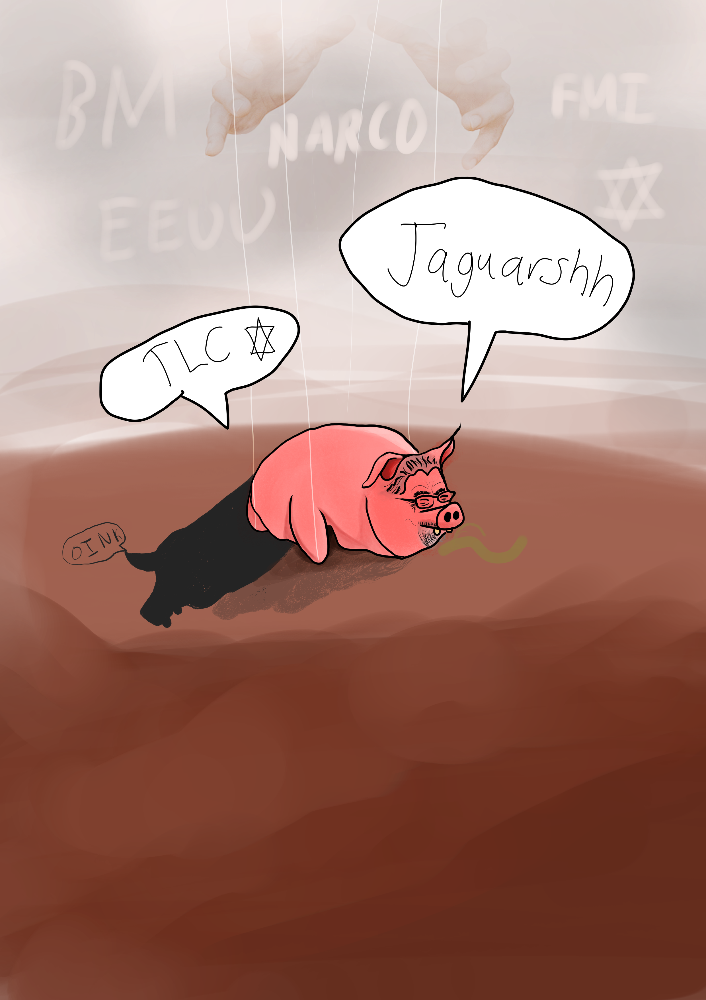

Mi Problema con el Gobierno de Chaves

Prefacio
Costa Rica es un país complejo, y aún más compleja es su historia política. Desde las garantías sociales hasta la abolición de ejército, este país ha pasado por una serie de transformaciones que le han dado forma a su identidad actual. La identidad del país se ha construido en torno a una ideología mayormente progresista.
Por ejemplo, el país ha recibido distintos premios internacionales por su enfoque en la sostenibilidad y la protección del medio ambiente. Costa Rica es uno de los únicos países del mundo que ha logrado revertir la deforestación a niveles históricos. Otra cosa que distingue a Costa Rica de otros países del mundo, a lo largo de su historia, es el compromiso con la educación y la salud pública, lo que ha llevado a altos índices de alfabetización y esperanza de vida. Por ejemplo, la Universidad de Costa Rica toma el puesto 20 entre las mejores universidades de latinoamérica. La educación primaria y secundaria son gratuitas y obligatorias, lo que ha permitido que la mayoría de la población tenga acceso a una educación de calidad. Además, Costa Rica ha invertido significativamente en su sistema de salud, lo que ha llevado a una atención médica universal y de alta calidad. Costa Rica también es un país de manufactura de productos médicos especializados, lo que ha contribuido a su economía y a la creación de empleo en el sector. También, siempre ha sido caracterizado por tener una de las democracias más plenas del mundo, así como ser uno de los países con mayor libertad de prensa en 2021, tomando el puesto 5.
Aunque Costa Rica a lo largo de su historia ha tenido muchos avances y muy buena reputación debido a formar un estado de bienestar y democracia, impulsado inicialmente por Dr. Rafael Ángel Calderón Guardia, este país no está exento de problemas. El país es altamente vulnerable económicamente, ya que la mayoría de su producto interno bruto (PIB) depende del turismo, lo que hace que su economía dependa de la imagen del país. A su vez, la desigualdad económica y social convierten en uno de los países más desiguales del mundo, según el Banco Mundial. Aunado a eso, las playas del costarricense han sido transferidas a empresas privadas, hoteles e inmovilarias, desatando un terrible problema de gentrificación. Otro de los problemas que enfrenta el país es la inseguridad y corrupción, de la cual voy a hablar con más detalle luego en este artículo. Entre los otros problemas que voy a enfrentar en este artículo, están la caída de libertad de prensa del puesto 5 al puesto 36, en tan solo 4 años, déficit fiscal, caída de la calidad de la educación y salud, daño permanente a la imagen de Costa Rica, con el sucio, y lleno de sangre, tratado de libre comercio con Israel,y sobre todo, las políticas neoliberales que arruinan el país cada vez más y más.
1. Turismo e imagen del país
Es bien conocido el hecho de que la economía de Costa Rica depende en gran medida del turismo. Este aporta 8,2% del PIB del país. Sin embargo, esta dependencia hace que la economía sea vulnerable a factores tanto externos como internos. Ejemplos de factores externos pueden ser cosas como la pandemia. Y factores internos pueden ser cosas como la inseguridad.
La pandemia ya pasó, pero la inseguridad sigue creciendo y creciendo y crece sin parar. El gobierno de Chaves tampoco se ha visto muy preocupado por esto. Los diputados del oficialismo incluso llegan a decir que la inseguridad "solo afecta a la gente que está metida en bandas criminales".
Rodrigo Chaves se ha encargado de atacar y destruir la imagen del país a nivel internacional. Primero, no ha atacado la inseguridad, pero si se ha dedicado fervientemente a atacar a los policías, al poder judicial y al OIJ. No solo esto, sino que misteriosamente cuando Chaves llegó al poder las incautaciones de cocaína cayeron drásticamente.
A los chavistas les gusta decir que la inseguridad solo afecta a bandas criminales, pero esto es tan estúpido y falaz que solo hace falta hacer una búsqueda en Google para notar que eso es falso. No son casos aislados, son cientos de casos. La inseguridad afecta a todo el mundo. Incluso afecta a los turistas.
2. Gentrificación excesiva
La gentrificación es un problema que afecta a muchas ciudades del mundo, y Costa Rica no es la excepción. La gentrificación es el proceso por el cual un barrio o una zona se vuelve más atractiva para personas de mayor poder adquisitivo, lo que lleva a un aumento en los precios de la vivienda y a la expulsión de los residentes originales. A Chaves le gusta ignorar este problema.
3. Desigualdad social y económica
Otra cosa que le gusta mucho a los chavistas es hablar de la belleza del PIB y su crecimiento
en Costa Rica. Para esto, hay que entender qué es el PIB:
El Producto Interno Bruto (PIB) es el valor monetario de todos los bienes y servicios
finales producidos en un país durante un período de tiempo determinado, generalmente un año.
Es una medida clave de la actividad económica y se utiliza para evaluar el crecimiento económico
de un país.
Esta es una medida de la actividad económica en el país, pero, ¿Qué tanto se ve reflejado en los
habitantes
del país realmente?
Costa Rica es uno de los países más desiguales del mundo. Según el coeficiente de Gini, que mide la desigualdad en la distribución del ingreso, Costa Rica tiene un coeficiente de Gini de 0.467, lo cual lo ubica en el puesto 161 en el mundo en cuanto a igualdad, osea, es uno de los países más desiguales del mundo.
La respuesta a la pregunta que hice en el primer párrafo es: No, no se ve reflejado. El PIB es un indicador de la actividad económica, pero no mide qué tanto de esa actividad económica se va al gasto público. Veamos un ejemplo internacional, Irlanda. Irlanda dejó entrar a Google a su país con tasas impositivas extremadamente bajas. Esto hizo que el PIB de Irlanda creciera exponencialmente, pero la mayoría de ese dinero no se fue al gasto público. De hecho, el gasto público se mantuvo extremadamente bajo. Irlanda fue quitando esta política absurda, porque Google podía actuar libremente e Irlanda no se llevaba casi que nada. El pueblo de Irlanda no vió casi beneficios fiscales, aparte de una cantidad de empleos.
Es lo mismo en Costa Rica. El PIB puede crecer, pero si la mayoría de ese dinero se va a las grandes empresas y no al gasto público, entonces la mayoría de la población no se ve beneficiada. De hecho, la mayoría de este crecimiento fue en zonas francas, las cuales no pagan impuestos. Osea, directamente el costarricense no nota esto. Tal cual, literalmente, no hay beneficio al costarricense. Esto sin quitar el hecho de que la recaudación fiscal en Costa Rica es deleznable y fácil de evitar.
Otra cosa que le gusta mucho a Chaves y a su partido es hablar de jornadas 4x3. Estas jornadas tratan de trabajar 4 días a la semana y descansar 3, pero trabajando 12 horas diarias. La diputada Pilar Cisneros dice que esto "atraerá empresas al país" y "aumentará los empleos", además de decir que "el trabajador podrá escoger su horario". Esto es falaz. Primero que todo, "atraerán empresas al país" es una falacia, basada en ningún tipo de información real, a su vez del argumento de que "aumentará los empleos". Esto es algo que los empresaurios de zonas francas dicen para aumentar sus ganancias a costa de la salud de los trabajadores. ¿A qué empresaurio no le gustaría tener que pagar menos a sus trabajadores a costa de la salud de los mismos? ¡Es una belleza! Este es el modelo capitalista que tanta belleza ha traído al mundo. Además, no hay NINGÚN estudio técnico con modelado ecométrico que DEMUESTRE que atraiga empresas. Literalmente NINGUNO. Lo único que hay son empresaurios diciendo "atraerá empresas al país". Esto por supuesto es mentira. Lo que quieren es explotar a los mismos trabajadores y de hecho tener que pagarles menos. Por supuesto habrá inversión extranjera. Inversión extranjera en zonas francas que no pagan impuestos.
Ahora, Pilar: "el trabajador podrá escoger su horario". ¿Esto es enserio? Yo cuando escuché a esta señora neoliberal tirar esto me quedé petrificado. ¿Tenemos a una diputada que nunca ha trabajado en su vida? Esto va enserio. ¿Esta señora cree que el trabajador va a poder escoger su horario? ¿En qué mundo vive esta señora? Si acaso, el empleador te ofrece un poco de flexibilidad si eres estudiante. Pero en un trabajo normal, el empleador es el que escoge el horario. Y si no te gusta, fuera. Te echan. ESTA es la realidad doña Pilar.
4. Caída de la calidad de la educación y salud
Estas políticas neoliberales son las que han llevado a Costa Rica a ser un país con nula industria nacional. Costa Rica exporta sus productos naturales, vende la industria arrocera al extranjero, y se dedica a ser un país de servicios y turismo. Esto no es sostenible a largo plazo. Costa Rica OCUPA industria propia. La puede tener. Costa Rica necesita un fuerte modelo proteccionista. Costa Rica tiene una educación capaz de formar profesionales que puedan emprender y generar industria propia. Costa Rica TIENE la capacidad técnica de ser un país industrializado. ¿Qué hace nuestro gobierno querido? Vende la industria a multinacionales y zonas francas que lo único que hacen es saquear nuestra mano de obra cualificada y pagar impuestos ridículos o nulos. A su vez, descuida nuestro principal pilar: la educación. La educación en Costa Rica está en caída libre.
Descuidar la educación es un error fatal, que tarda décadas en arreglarse. Costa Rica necesita mejor educación, no peor. Necesita más inversión en educación, no menos. Necesita un sistema educativo que fomente la creatividad, el pensamiento crítico y la innovación. Costa Rica necesita un sistema educativo que prepare a sus ciudadanos para los desafíos del futuro. Todo esto se ha ido cayendo en PICADA. Esto hace que los jóvenes costarricenses se metan a bandas criminales desde edades MUY CORTAS. Los narcos reclutan a jóvenes porque tienen mayor inmunidad ante la ley. Además, si los descubren, pueden reclutar más. LA CLAVE ESTÁ EN LA EDUCACIÓN, LA CULTURA.
Sobre la salud, las listas de espera se dispararon en el gobierno de Chaves. Esto es algo que afecta a todos los costarricenses, y el Gobierno de Chaves no hace nada al respecto. Está ocupado en otras cosas, como atacar a la prensa y al poder judicial.
5. Tratado de libre comercio con un estado genocida
Otra cosa que me repugna severamente de este gobierno es el hecho de que Chaves quiera hacer un tratado de libre comercio con el país genocida, violento, animal y opresor de Israel, el cual ha cometido infinitos crímenes de guerra y está haciendo una limpieza étnica en la franja de gaza. Este país, que no ha recibido ningún tipo de sanción internacional por sus asquerosos actos, es un país que actúa libremente en contra de los derechos humanos. Y Chaves, en vez de condenar este terrorífico país, lleno de sangre, lo que hace es promover un TLC con el mismo. Este video muestra como no tiene ni un tipo de vergüenza este sujeto. Es más, se burla del genocidio y usa un sarcasmo asqueroso.
Este presidente no me representa a mí para nada. Yo no quiero un tratado de libre comercio con los terroristas asesinos de niños de Israel. Estoy seguro que muchos costarricenses estarán de acuerdo conmigo en este aspecto. A los chabestias les gusta negar el genocidio. Pueden agarrar esta lectura ligera de wikipedia, que habla de todos los indicios de limpieza étnica y genocidio que está cometiendo el ""estado"" ficticio de Israel. Este es uno de los artículos de Wikipedia más editados y más extensos.